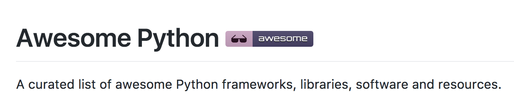
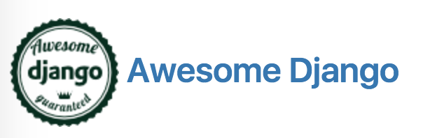
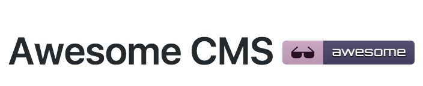
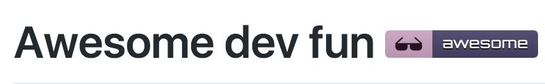

Mislav



Awesome-Something-Smart

ComcastifyJS - Sometimes images just load too damned fast.elevator.js - A slow "back to top" button with real elevator music.PyTest-VW - Makes failing test cases succeed in CI.TrumpScript - Make Python great again.Outcognito Mode - Incognito Mode for extroverts.